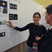

|
The Mustangs captured the Principal's Cup trophy for the third year in a row with a 50-39 win over arch rival Payton. Freshmen Alina Yamin and Madeline Schoeff led the way for Northside as Yamin scored a game high 27 points and Schoeff added 12. |
|  |
Olivia took 32nd place at the state meet in the 100 yard breast stroke event with a time of 107.15. Lena took 35th place in the 100 freestyle event with a time of 53.62. She also went 27.74 in the 50 yard freestyle event which qualified her for Saturday’s championship meet. |
|
The cross country program had another big weekend at Washington Park. he womens team became the only team in school history to win a CPS championship and a IHSA regional in the same year. Sara McCoy 3rd (18:48), Fiona Casey 4th (18:55, Violet Sackett 5th (1906).
|